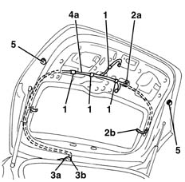

7205E56 Stripping TAILGATE
- Path
- Procedures > 72 PANELS AND FRAME > 7205 STRIPPING FOR REPLACEMENT OPERATIONS > 7205E exterior parts > 7205E56 Stripping TAILGATE
- Kind
- repair procedure (removal / refitting; the operation number is the code)
- Applies to
- all engines; all production periods
- Interactive page
- https://sloeber94.github.io/elrnDB-lYpsln/en/#/2429709
Applies to: all engines; all production periods
7055A83 BADGE on tailgate - R.R.
5550D16 third stop light - r+r
7015A04 tailgate interior panel - r+r
7015B30 exterior handle or block support - r+r with panel/protection removed
7015B10 single tailgate lock - r+r or repair with panel/protection removed
5050C34 rear wiper arm with blade - r+r
5050C42 rear wiper motor - r+r
7035B14 rear window glass r r includes cleaning of housing
1. Release the wiring from the retainers.
2. Connect a probe to the end (2a) of the wiring and a probe to end (2b) to help refit the wiring.
3. Prise cable channel (3a) out of hole (3b) in the tailgate.
4. Extract wiring (4a) from the tailgate and pass it through hole (3b).
5. Prise up both adjustable pads acting as buffers for the tailgate when closed.

Topics linked from this page (8)
- 5050C34 rear wiper arm with blade - r+r
- 5050C42 rear wiper motor - r+r
- 5550D16 third stop light - r+r
- 7015A04 tailgate interior panel - r+r
- 7015B10 single tailgate lock - r+r or repair with panel/protection removed
- 7015B30 exterior handle or block support - r+r with panel/protection removed
- 7035B14 rear window glass r r includes cleaning of housing
- 7055A83 BADGE on tailgate - R.R.